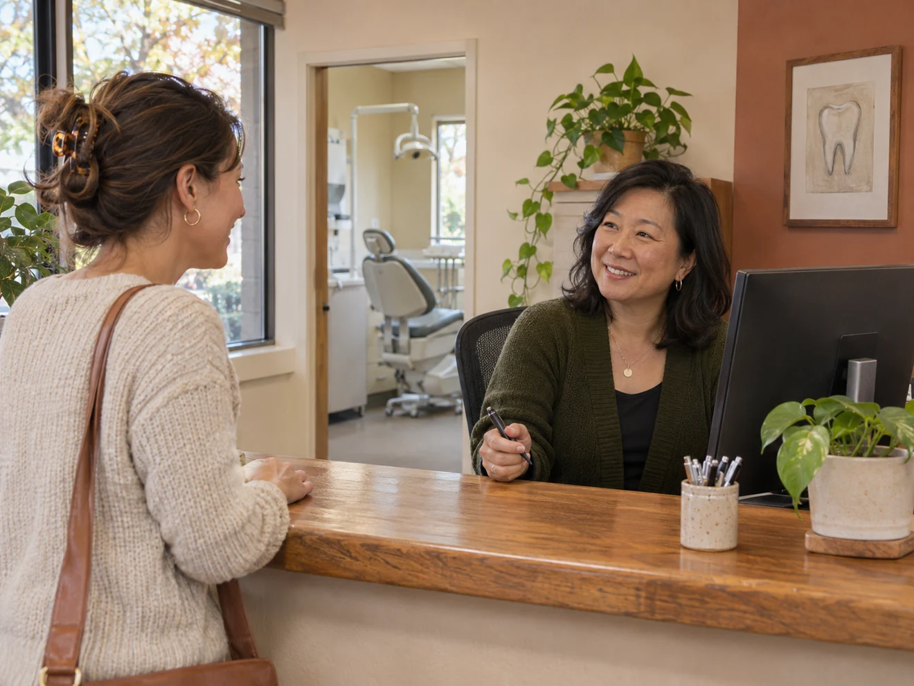
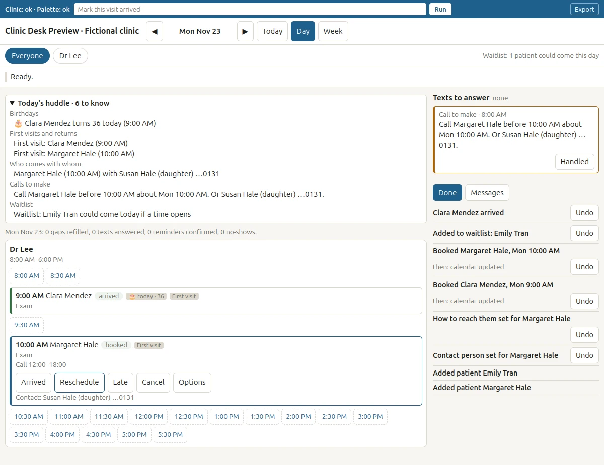

Clinic Desk for independent dental practices
Keep your
front desk
moving.
See today’s schedule, check in the right visit, and find the contact your office has on record. Pick up where you left off when the phone rings.

A morning at the desk
What happens when the phone rings mid-check-in?
Clara arrives for her 9:00 visit. While you’re checking her in, a colleague asks who to call about Margaret’s appointment. Here’s what the desk can see.
See what needs attention before the first visit.
- 9:00 AM
- Clara Mendez First visit
- 10:00 AM
- Margaret Hale Call about her visit
Today’s huddle puts first visits, calls to make, and the waitlist beside the schedule.
Mark the visit you have open.
Clara’s card is open. The arrival will be recorded on this visit.
Open Margaret’s card for the current contact.
Clara’s arrival stays in Clara’s history. Margaret’s card looks up the contact her record authorizes when you open it.

Open full-size screenshotBefore you try a pilot
Will it fit your front desk?
Bring your office manager, the name of your scheduler, and one interruption you’d like to handle better.
What can my staff try today?
We’ll walk through a fictional appointment and contact in the current Linux desktop preview. Your staff can see the schedule, use the Arrived button or a typed command, and check the visit’s history after reopening.
Will it work with our scheduler?
Tell us what you use for scheduling and where your team keeps contact details. We’ll review the handoff and confirm the setup your office would need before you decide on a pilot.
Where does the preview keep its data?
The desktop preview works offline and stores its fictional schedule on the computer running it. We’ll walk through access and backup expectations with your office and IT contact before considering live records.
What would the pilot cost?
We’ll scope one office and a specific desk workflow with you, then discuss setup, support, and pricing before you commit.
Bring us one busy morning.
Tell us what your team juggles between arrivals, callbacks, and the schedule. We’ll walk it through together.